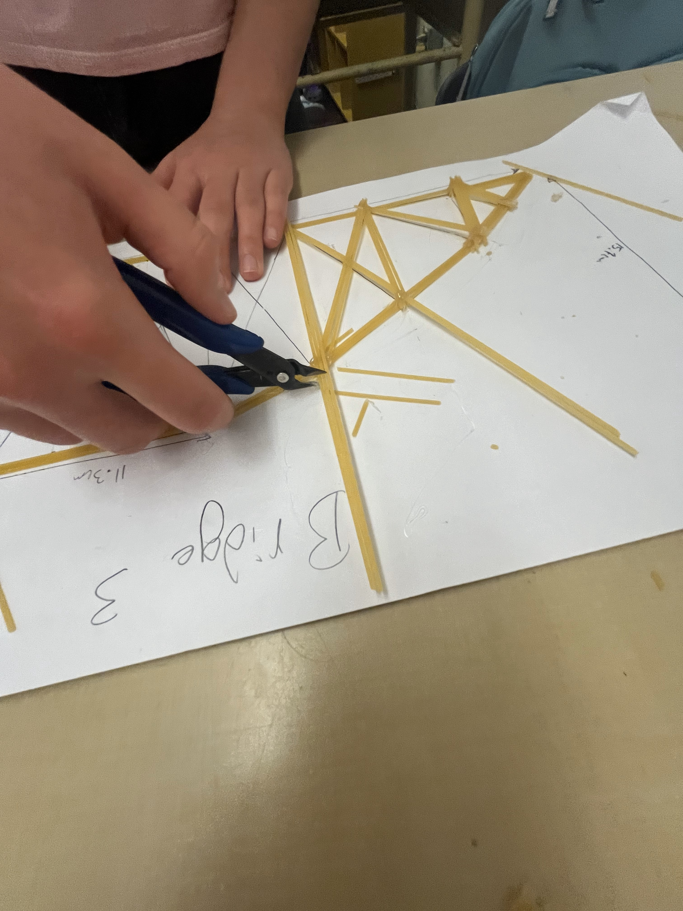
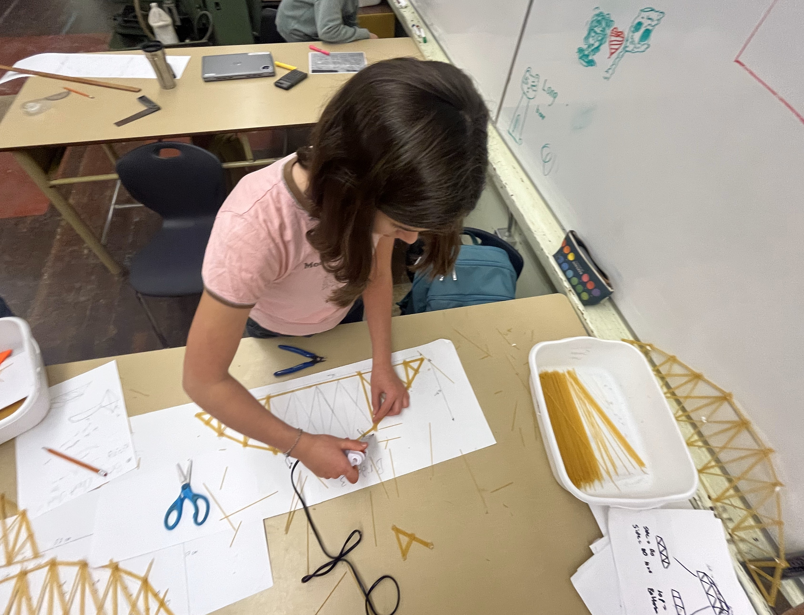
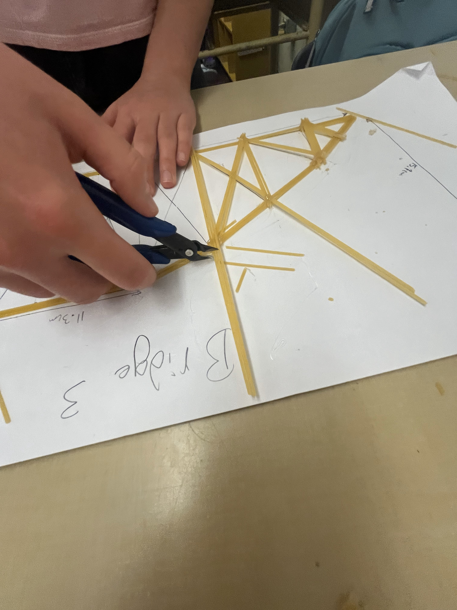
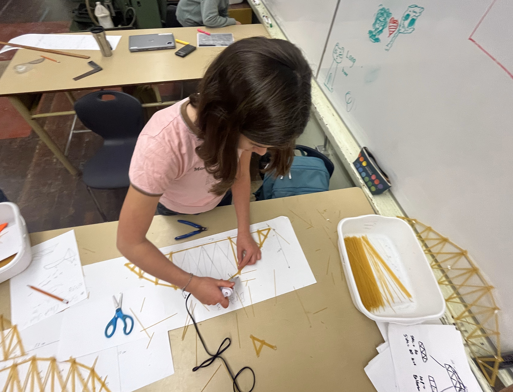

When deciding what our final bridge design will look like we looked back at what worked and combined that into what we hope is the winning bridge. We kept the camelback design except we made the trusses more close together and made the frame more rounded. We added extra support to the sides because of previous breakage there.
 


